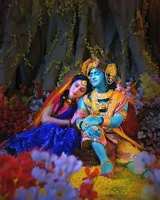

|

Krishna's Life
Birth: Born to Devaki and Vasudev, Krishna was secretly raised by foster parents Yashoda and Nanda in
the village of Gokul.
Childhood in Vrindavan: He spent his childhood in Vrindavan, where he met Radha and their divine
relationship began through their "leelas" or divine pastimes.
Mission: At age 10, Krishna left Vrindavan to fulfill his divine mission to defeat his evil uncle Kansa
and establish righteousness in Mathura.
Later Life: He later moved to the kingdom of Dwarka, where he was reunited with Radha, and continued to
fulfill his divine duties.
Radha's Life
Birth: Radha was born to Vrishabhanu and Kirtida in a village called Rawal, near Gokul.
Childhood: She was raised in Barsana, a village near Vrindavan, and spent her youth with Krishna.
Devotion: Radha is considered the embodiment of selfless love and devotion to Krishna.
Later Life: She later joined Krishna in Dwarka and was with him during her final moments.
Radha and Krishna's Relationship
Spiritual Union: Radha and Krishna are inseparable and considered a single spiritual entity, a symbolic
representation of the soul (Radha) seeking union with the divine (Krishna).
Love Story: Their love is the foundation of Bhakti Yoga, which teaches complete surrender to God.
Marriage: They were not formally married, but their love is considered the most significant form of pure
love.
Departure: After Radha's death, Krishna is said to have never played his flute again, which he once did
to call Radha and other gopis.
|